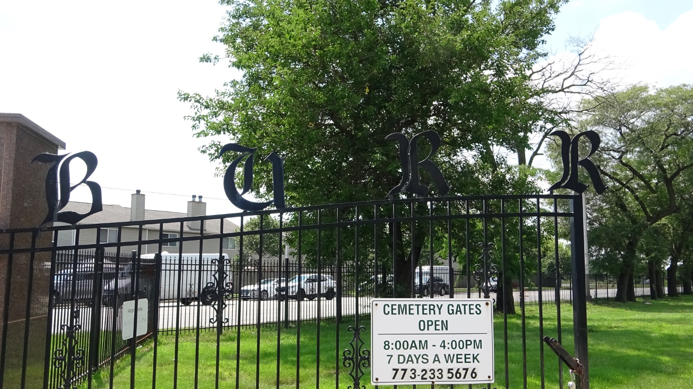
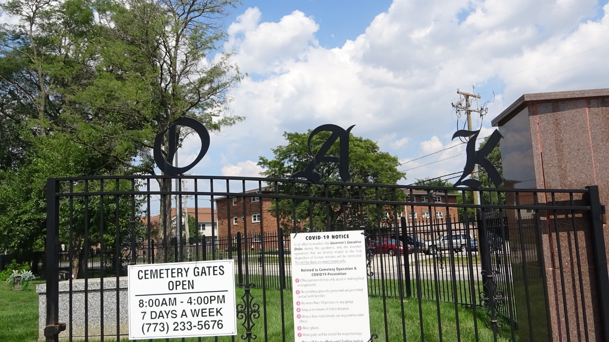

Burr Oak Cemetery


Similar to Restvale Cemetery, Burr Oak Cemetery is located in Alsip, Illinois, a southwestern suburb of Chicago and first opened in 1927. Alsip sits twenty miles southwest of Chicago. Along with Restvale, it is the last African American cemetery to open in the area. Blues musicians, celebrities, and famous athletes are buried at Burr Oak. Over forty Blues musicians are buried here including Willie Dixon and Otis Spann. Burr Oak’s address is 4400 West 127th Street, Alsip, Illinois, 60803.